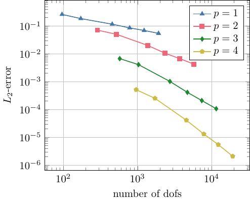
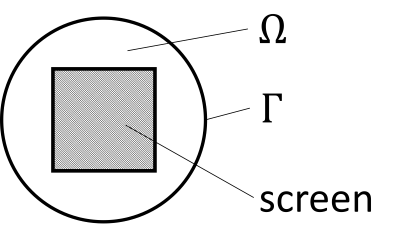

Convergence Rates for HO BEM#
NG-BEM implements high order boundary element methods. The accuracy of the method depends on the order of the finite element spaces involved. On this page some numerical results of NG-BEM are presented:
Analytically solvable problems with an unkown in one of the following trace spaces are considered $\( H^{\frac12}(\Gamma), \quad \boldsymbol H^{-\frac12}(\mathrm{div}_\Gamma, \Gamma) \quad \textnormal{and} \quad H^{-\frac12}(\Gamma)\,.\)\( The unkown trace is computed by NG-BEM for different orders of approximation \)p\( on a sequence of subsequently refined meshes. The absolute \)L_2$-error as function of degrees of freedom is analysed and convergence rates known from theory are exemplarily verified.
Given a complete set of Cauchy data the solution of the pde is given by its boundary integral representation. Thus, besides traces the numerical solution of the pde depends on \(p\). We consider an electrostatic potential in \(H^{1}(\Omega)\) as solution of the Laplacian and analyse the decrease of error with respect to varying order \(p\).
Test 1: Laplace Dirichlet trace in \(H^{\frac12}(\Gamma)\)
Consider the harmonic function \(u\),
as unique solution of the Neumann boundary value problem
\(\begin{array}{rcl l} \Delta u &=& 0, \quad & \mathrm{in} \, \Omega\,, \\ \gamma_1 u &=& u_1, \quad & \mathrm{on} \, \Gamma\,. \end{array}\) |
\(\quad\quad\quad\) |
|

Let \(\Omega\) be the unit ball and \(\Gamma\) the unit sphere, respectively. Using the NG-BEM solver we compute the Dirichlet data for varying order \(p\) on a sequence of meshes with decreasing mesh size, i.e., \(h \sim\frac1N\). As the exact solution is kown, we compute the absolute \(L_2\)-error of the numerical solution.
The following table contains the numerical results of our convergence test.
mesh size |
ndofs |
error |
ndofs |
error |
ndofs |
error |
ndofs |
error |
|---|---|---|---|---|---|---|---|---|
\(N\) |
\(p=1\) |
\(L_2\) |
\(p=2\) |
\(L_2\) |
\(p=3\) |
\(L_2\) |
\(p=4\) |
\(L_2\) |
96 |
50 |
5.64e-02 |
194 |
1.26e-02 |
434 |
4.17e-04 |
770 |
5.22e-05 |
172 |
88 |
3.13e-02 |
346 |
2.02e-03 |
776 |
2.37e-04 |
1378 |
2.70e-05 |
456 |
230 |
1.11e-02 |
914 |
5.85e-04 |
2054 |
3.86e-05 |
3650 |
3.82e-06 |
784 |
394 |
5.39e-04 |
1570 |
2.40e-04 |
3530 |
9.51e-06 |
6274 |
4.48e-07 |
1228 |
616 |
3.38e-04 |
2458 |
1.24e-04 |
5528 |
3.73e-06 |
9826 |
1.40e-07 |
1922 |
963 |
2.04e-04 |
3846 |
6.44e-05 |
8651 |
1.47e-06 |
15378 |
4.52e-08 |
To catch the meaning of these results consider the \(L_2\)-error as function of the number of degrees of freedom (ndofs) for order \(p=1,...,4\):

Test 2: Laplace Neumann trace in \(H^{-\frac12}(\Gamma)\)
To analyse convergence rates for traces in \(H^{-\frac12}(\Gamma)\) consider now the Dirichlet boundary value problem with unkonwn Neumann data, i.e.,
\(\begin{array}{rcl l} \Delta u &=& 0, \quad & \mathrm{in} \, \Omega\,, \\ \gamma_0 u &=& u_0, \quad & \mathrm{on} \, \Gamma\,. \end{array}\) |
\(\quad\quad\quad\) |
|
Thus, again \(u\) from Test 1 is the unique solution of this problem. Using the NG-BEM solver we compute the Neumann data for varying order \(p\) on a sequence of meshes with decreasing mesh size, i.e., \(h \sim\frac1N\). As the exact solution is kown, we compute the absolute \(L_2\)-error of the numerical solution.
The following table contains the numerical results of our convergence test.
mesh size |
ndofs |
error |
ndofs |
error |
ndofs |
error |
ndofs |
error |
|---|---|---|---|---|---|---|---|---|
\(N\) |
\(p=0\) |
\(L_2\) |
\(p=1\) |
\(L_2\) |
\(p=2\) |
\(L_2\) |
\(p=3\) |
\(L_2\) |
96 |
96 |
2.59e-01 |
288 |
7.05e-02 |
576 |
6.66e-03 |
960 |
5.10e-04 |
172 |
1720 |
1.84e-01 |
516 |
5.02e-02 |
1032 |
4.06e-03 |
1720 |
2.49e-04 |
456 |
4560 |
1.15e-01 |
1368 |
2.00e-02 |
2736 |
1.01e-03 |
4560 |
4.08e-05 |
784 |
7840 |
8.47e-02 |
2352 |
1.04e-02 |
4704 |
4.09e-04 |
7840 |
1.30e-05 |
1228 |
1220 |
6.89e-02 |
3684 |
6.72e-03 |
7368 |
2.07e-04 |
12280 |
5.40e-06 |
1922 |
1922 |
5.39e-02 |
5766 |
4.21e-03 |
11532 |
1.06e-04 |
19220 |
2.06e-06 |
To catch the meaning of these results consider the \(L_2\)-error as function of the number of degrees of freedom (ndofs) for order \(p=1,...,4\):

Common notes for Test 1 and 2:
We actually considered the Laplace operator with mixed boundary values and solved the bvp only once.
Our manufactured solution \(u\) does not depend on the mesh, i.e., it is a solution for all meshes. This is why the geometrical approximation order is \(1\) for all test runs.
Check out the repository’s test folder if you like to run this test.
Test 3: Represenation formula for electrostatic potential in \(H^{1}(\Omega)\)
Given complete Cauchy data \(u_0 \in H^{\frac12}(\Gamma)\) and \(u_1 \in H^{-\frac12}(\Gamma)\), the solution \(u\) of the boundary value problem
is given by the represenation formula
In order to illustrate the high accuracy of the high order BEM, we evaluate the representation formula for numerically computed Cauchy data. In our test setting \(\Omega\) is again the unit ball and \(u\) is evaluated on a rectangular screen placed inside the ball, i.e.,

The following table contains the numerical results of our convergence test. Note that \(p\) denotes the order of approximation taken for the Dirichlet trace. The order of approximation of the Neumann trace is then \(p-1\).
mesh size |
\(L_2\)-error |
\(L_2\)-error |
\(L_2\)-error |
\(L_2\)-error |
|---|---|---|---|---|
\(N\) |
for \(p=1\) |
for \(p=2\) |
for \(p=3\) |
for \(p=4\) |
Test 4: Maxwell Neumann trace in \(H^{-\frac12}(\mathrm{div}_\Gamma, \Gamma)\)
Besides electrostatics we can also solve boundary value problems from electromagnetics. The relevant trace spaces are \(\boldsymbol H^{-\frac12}(\mathrm{curl}_\Gamma, \Gamma)\), and its dual, \(\boldsymbol H^{-\frac12}(\mathrm{div}_\Gamma, \Gamma)\). NG-BEM offers finite element spaces for both trace spaces.
In order to verify convergence rates for high order bem, we consider the scattering of a plane wave \(\boldsymbol E_{\mathrm{inc}}\) at a perfect electric conducting sphere. This scattering problem is analytically solvable by so-called Mie series. In order to keep the geometrical approximation error negligible, the geometrical approximation oder is set to \(4\) for all tests runs.
The scattered electric field \(\boldsymbol E\) solves the following boundary value problem:
\(\begin{array}{rcl l} \mathbf{\mathrm{curl}}\,\mathbf{\mathrm{curl}}\, \boldsymbol E - \kappa^2 \, \boldsymbol E&=& \boldsymbol 0, \quad & \mathrm{in} \, \Omega^c\,, \\ \gamma_R \boldsymbol E &=& \boldsymbol E_{\mathrm{inc}}, \quad & \mathrm{on} \, \Gamma\,, \\ \textnormal{ + radiation condition} & & &|x| \to \infty\,. \end{array}\) |
\(\quad\) |
|
Using the NG-BEM solver we compute the Neumann data for varying order \(p\) on a sequence of meshes with decreasing mesh size i.e., \(h \sim\frac1N\). The mesh is approximated with curvilinear elements of order \(4\). As the exact solution for Mie-scattering kown, we compute the absolute \(L_2\)-error of the numerical solution.
The following table contains the numerical results of our convergence test.
mesh size |
ndofs |
error |
ndofs |
error |
ndofs |
error |
ndofs |
error |
ndofs |
error |
|---|---|---|---|---|---|---|---|---|---|---|
\(N\) |
\(p=0\) |
\(L_2\) |
\(p=1\) |
\(L_2\) |
\(p=2\) |
\(L_2\) |
\(p=3\) |
\(L_2\) |
\(p=4\) |
\(L_2\) |
188 |
282 |
7.72e-01 |
564 |
1.27e-01 |
1410 |
2.01e-02 |
2632 |
1.15e-03 |
4230 |
3.56e-04 |
722 |
1083 |
3.54e-01 |
2166 |
3.19e-02 |
5415 |
2.49e-03 |
10108 |
7.34e-05 |
16245 |
1.17e-05 |
1620 |
2430 |
2.36e-01 |
4860 |
1.42e-02 |
12150 |
7.14e-04 |
22680 |
1.33e-05 |
36450 |
1.39e-06 |
2804 |
4206 |
1.79e-01 |
8412 |
8.09e-03 |
21030 |
3.14e-04 |
39256 |
3.93e-06 |
63180 |
3.64e-07 |
Using the NG-BEM solver we compute the Neumann data \(\gamma_N \boldsymbol E \in \boldsymbol H^{-\frac12}(\mathrm{div}_\Gamma, \Gamma)\) for varying orders of approximation \(p\). The following diagram shows the \(L_2\)-error of the approximated Neumann data as function of the number of degrees of freedom for \(p=0,...,4\):

Notes:
The Mie series solves the scattering at the sphere. A high order mesh is required to obtain high order convergence at least if the traces are approximated with \(p>2\).
For approximation order \(p=0\) the linear edge element functions are used, i.e., for a discretisation of trace space \(H^{-\frac12}(\mathrm{div}_\Gamma, \Gamma)\) those funcitons are called Rao-Wilton-Glisson functions (RWG).
Check out the repository’s test folder if you like to run this test.